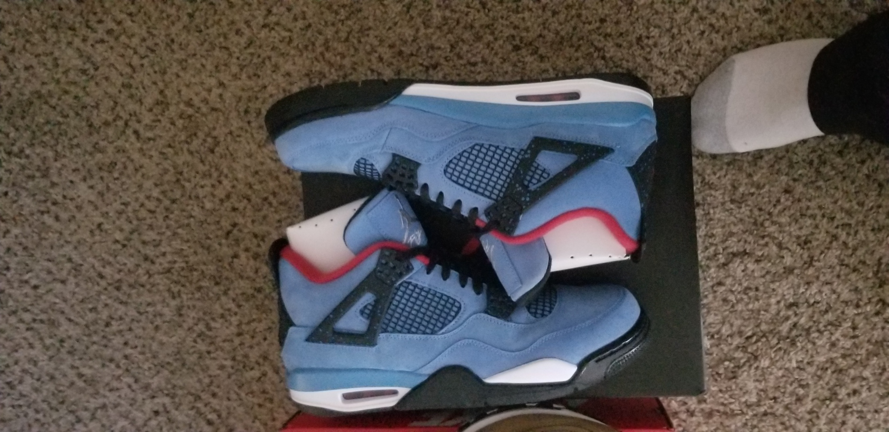

Welcome to my page. My name is Darius Eiland. I am currently serving in the U.S. Air Force doing human resource work. I enjoy relaxing and occasionally playing video games. My hobbies include collecting sneakers, financial investing, and watching Youtube. Although, I have been in the military for the past seven years, I don't plan on retiring. I am single with no kids and I don't expect that to change anytime soon. I would like to do more traveling at some point as I also enjoy driving on the open road. Being able to afford nicer vehicles some day is definitely a goal of mine.
With a degree in programming, and IT certifications, I aspire to work in the IT career field as a Full Stack Web Developer or perhaps a DevOps (Developer Operations). Network Administrator and IT Support Specialists are also good careers I am exploring. The great aspect of these careers in my opinion is work autonomy giving you the freedom to work remotely and set your own hours. You can also freelance as a programmer/developer. The opportunities for career advancement and increasing pay presents the ideal job for me to pursue.
My love for sneakers began at a young age. Due to my family's poor economic standing, my parents was not able to afford the more presitigous brands. I felt a little ostracized as most of my classmates owned the latest and greatest sneakers. In 4th grade, I can remember receiving my first pair of Nike's from my mother on Christmas. The overwhelming joy I felt is a moment I will not forget. My friends were extremely surprised to watch me struct around in my new shoes from the world's top brand. Moving forward, I was able to continue to secure shoes that were of name brand quality on an occasional basis but they were not exactly the shoes I dreamed of having. Air Jordans were considered the cream of the crop and the price of them continued to remain out of reach. When I became of age, I was finally able to afford the sneakers I always wanted. Price was no longer a deterrent. Over the past 10 years, I purchased a variety of sneakers from Air Jordan and Nike culminating in a total value of over 13,000 dollars.
*This is just a snippet of the shoes I own. I currently own about 92 pairs.
*(Left) Above is an image of the Air Jordan 4 Travis Scotts. Currently the shoes are valued between 800 and 1000 USD. according to the website StockX.(Center and Right) are images of the Jordan 11 Black Gamma and White Legend Blue. Both are currently valued between 400 and 500 USD.
I was introduced to the world of financial investing after opting into the military's version of the 401k plan called TSP (Thrift Savings Plan). I did plenty of research getting as much information as I possibly could on investing in index funds. Eventually I would stumble upon financial guru Dave Ramsey. His Youtube videos and his website daveramsey.com provided good information on not only how to invest but to build financial wealth over time. I was fascinated about the possibility of building wealth by allowing your money to work for you. I currently invest in TSP as well as two additional index funds the S&P 500 and the Nasdaq 100. Both have performed extraordinarily well over the past 10 years yielding great returns.
| S&P 500 10 YEAR HISTORICAL RETURN |
|---|
2011 2012 2013 2014 2015 2016 2017 2018 2019 2020 |
0.00% 13.41% 29.60% 11.39% -0.73% 9.54% 19.42% -6.24% 28.88% 7.26% |

| NASDAQ 100 10 YEAR HISTORICAL RETURN |
|---|
2011 2012 2013 2014 2015 2016 2017 2018 2019 2020 |
-1.80% 15.91% 38.32% 13.40% 5.73% 7.50% 28.24% -3.88% 35.23% 28.71% |
This video of Dave Ramsey's show is one of my favorites to watch. It helps me maintain my focus and positive attitude with an eye towards the future
I don't believe I will ever be able to own any of these exotic cars shown below but a C8 Corvette or a Toyota Supra may be possible. Drag Times is one of my favorite Youtube channels I enjoy watching. I have an interest in owning a nice car or two with plenty of horsepower in the future.